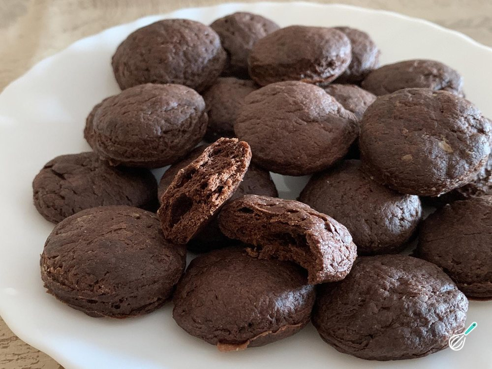

Doces · Biscoitos
Bolacha de Nescau com 4 ingredientes

Ingredientes
- 1 copo de farinha de trigo
- 1 copo de Nescau
- 1 ovo
- 3 colheres (sopa) de margarina
Modo de preparo
- Misture a farinha e o Nescau. Junte o ovo e a margarina.
- Mexa até chegar ao ponto da massa: lisa e que se solta das mãos.
- Faça bolinhas, achate e marque com um garfo. Arrume numa fôrma.
- Leve ao forno por 15 minutos.
Observação
Temperatura do forno não informada na fonte; use forno médio (cerca de 180 °C). Fonte: Pinterest.